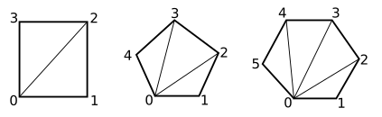

CS 424: Computer Graphics, Fall 2021
Lab 5: Data for glDrawArrays
Last week, you worked with an IFS representation of a polyhedron, and used it to draw a wireframe model with the functions glBegin(), glVertex(), and so on. But those functions are not available in modern OpenGL. Instead, glDrawArrays() and glDrawElements() are used for drawing. The function glDrawElements() is actually not suitable for drawing flat shaded polyhedra. (It's good for smooth shaded polyhedra that are trying to look like a curved surface.) So in this lab, you will draw polyhedra using glDrawArrays(). Hopefully, this will help you understand this function.
You will need the three files in /classes/cs424/lab5-files, or you can get them through these links: Polyhedra.html, glsim.js, and polyhedra.js. You will only work on Polyhedra.html.
Turning in your work: Your completed program should be submitted by the beginning of the lab period next Thursday. You can turn in a folder containing all of the required files, or you can just submit the file that you worked on, Polyhedra.html.
The Assignment
The assignment is mostly about drawing polyhedra using glDrawArrays(), but as a warm-up, you will draw a "point cloud," a large number of randomly selected points inside a sphere.
You should edit the file Polyhedra.html. You will only need to fill in the bodies of the drawPointCloud() function and of the drawPolyhedron() function — and hopefully write some other functions to help you will the polyhedra. There is a long comment on drawPolyhedron(), and the nasty code that is needed for using glDrawArrays() is there in a comment inside the function. We looked at that code in class on Wednesday.
For a point cloud, you need to generate a large number of points inside a sphere of radius 8.
To pick points, you can just choose random values for x, y, and z
using the formula 16*Math.random() - 8.
This gives a point in a cube. You can test whether the point is inside the sphere by testing
if x**2 + y**2 + z**2 < 64. If not, you should discard the
point; only keep points that are inside the sphere. The coordinates for the points have to stored
in a Float32Array, which is meant to be the global variable named pointCloud in the
program. You should create that array only once, the first time drawPointCloud() is
called. Note that you can check whether the array already exists using the test
if (pointCloud).
Once you have that array, you can draw the sphere using a call to
glDrawArray() with primitive type GL_POINTS. See the drawPointcloud()
function for details. Here is a point cloud with 10,000 points. It looks interesting when
you rotate it.

The JavaScript file polyhedra.js defines several polyhedra as indexed face sets. Each polyhedron is a JavaScript object. If poly is one of those objects, then it has three properties: poly.vertices, poly.faces, and poly.faceNormals. Each of these is an array of arrays (that is, a two-dimensional array). See the on function drawPolyhedron() in file Polyhedra.html for more information.
For use with glDrawArrays(), the data for the polyhedron must be stored in one-dimensional arrays of numbers. The arrays that you need can be constructed using the data from poly.vertices, poly.faces, and poly.faceNormals. That is your job for this lab.
Rather than rebuild the arrays every time a polyhedron needs to be drawn,
you should compute them once and save them. JavaScript has the nice property that
you can add things to an object that already exists. It makes sense to stash the
arrays that you need for glDrawArrays() in the same object that already
represents the polyhedron. The arrays that you need to create will be
poly.lineCoords, poly.faceCoords, and poly.normalCoords().
(You can create the array the first time you need it, and add it to the object
for later reuse. Note that you can test whether poly.lineCoords already
exists by testing if ( ! poly.lineCoords ).
So, what has to go into these new arrays? I suggest that you start with poly.lineCoords and get the wireframe working first.
The wireframe polyhedron is drawn using poly.lineCoords and GL_LINES with glDrawArrays(). For GL_LINES, you need two vertices in the array for each line segment that is to be drawn. Each vertex requires three coordinates, so that's six numbers per line segment. Every side of every face in the polyhedron has to be drawn. You need to collect all of the coordinates for all of the line segments into an array. In JavaScript, a nice way to do that is to start with an empty array and use the array's push() function to add elements to it. If you have collected all the coordinates into a JavaScript array named coords, then you should set
poly.linecCoords = new Float32Array(coords);
The above line creates a Float32Array containing the same data as coords.
When you are making the coordinate array, remember that the numbers in one of the face arrays from poly.faces are indices into the array of vertices, poly.vertices. You need to get the coordinates out of the vertex array. Note that edges of a face connect vertex number j to vertex number j+1 of that face, except for the last edge, which connects back to vertex number zero. As usual, it will be less confusing if you give names to the two vertex indices for an edge.
For drawing the faces of the polyhedron using GL_TRIANGLES, you need an array of vertex coordinates for the faces (poly.faceCoords) and an array of normal vector coordinates (poly.normalCoords). The array of vertex coordinates contains three vertices — that is, nine numbers — for every triangular face. The array poly.normalCoords must contain a separate normal vector (three numbers) for every vertex in poly.faceCoords. This is true even though all the vertices of a face have the same normal vector. There is a lot of redundancy here: You will add multiple copies of the same normal vector to poly.normalCoords.
You have another problem. The faces that you draw using the GL_TRIANGLES primitive must be triangles. But some faces of the polyhedra have four, five, or six sides. You have to subdivide those faces into triangles and treat each triangle separately:

Note that the vertices of the triangles are vertex zero, vertex j and vertex j+1, for all values of j from 1 to one less than the maximum vertex number. For example, the three vertices in the five-sided polygon have vertices number 0, 1, and 2 for the first triangle; 0, 2, and 3 for the second triangle; and 0, 3, and 4 for the third triangle.
You will need to apply a scale to the polyhedra to get them to a reasonable size. Unfortunately, they are not all scaled to the same initial size. Using glScale3f(3,3,3) doesn't give bad results. But it would be nicer to compute the correct scale for each polyhedron. To do that, you can find the maximum length of all the vertices in the polyhedron. Then a nice value for the scale factor is 8/maxLength. The length of a vertex with coordinates (x,y,z) is Math.sqrt(x**2 + y**2 + z**2). ("Length" here really means the distance of the vertex from (0,0,0).)
You might want to try assigning random colors to the faces of the polyhedra. If you want to do that, you would need a color array, and you would have to use glEnableClientState(GL_COLOR_ARRAY) to activate it...
Here are two stellated dodecahedrons, showing both the faces and the wireframe, one using random face colors (with random color components computed as 0.5+0.5*Math.random()).
.